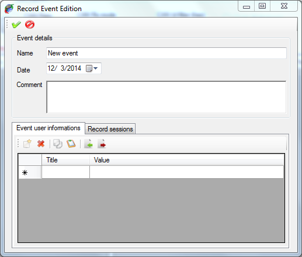

Record event control commands are available in the ‘Record event’ item  of the ‘Record’ menu of the main menu strip.
of the ‘Record’ menu of the main menu strip.

Click the ‘New recording event’ menu to create a new recording event or click the ‘Edit recording event details’ menu  to edit the current recording event.
to edit the current recording event.
The recording event edition form shows up.

Tool bar on the top contains only two commands
 Apply: Create the record event or apply changes to the current record event
Apply: Create the record event or apply changes to the current record event
 Cancel: Cancel the record event creation or change made to the current record event
Cancel: Cancel the record event creation or change made to the current record event
When creating a new record event, this event becomes the current record event. So all records performed afterward will stored under this new event.
Frame ‘Event details’ contains main information about the recording event.
Panel at the bottom of the form has two tabs.
The ‘Record sessions’ panel contains session control commands for the current record event. When creating a new record event, a session ‘New session’ is created by default.

All sessions of the record event are listed in the record session list. Tool bar on the top of the list contains session control commands.
 New: Create a new session inside the current record event.
New: Create a new session inside the current record event.
 Delete: Delete a session of the current record event.
Delete: Delete a session of the current record event.
Edit: Edit details of the selected session. Check ‘Recording session creation & edition’ for more details.
When deleting a record session, session is only removed from the list. Data that may have been recorded under the session to delete are not deleted.
Created with the Personal Edition of HelpNDoc: iPhone web sites made easy